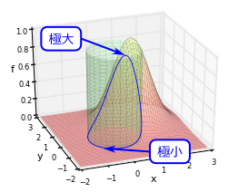
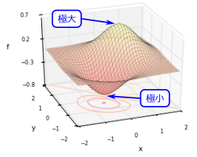
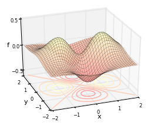
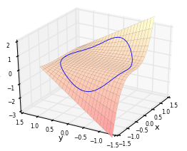

8.制約条件付き極値問題
制約されたグラフ上の極値問題。
制約条件付き極値問題

制約条件付き極値問題とは、例えば、右図の青曲線上での極大・極小を求める問題である。即ち、「元のグラフを制限した領域」での極大・極小を求める、という問題である。同図の場合、赤曲面に対して、
この章では、まず、制約条件がない場合について、1変数関数の停留条件(
なお、「極値問題」という代わりに、同じような文脈で、「最大・最小問題」や「最適化問題」と言ったりもする。
8.11変数関数の極値問題
1変数関数の停留条件：式(

知りたいのは、右図のように、ある関数
接線を考えるということは、1次近似を考えることと同じである。任意の点
この停留条件(
例題

同図より、
8.2多変数関数の極値問題
多変数関数の停留条件：式(

右図のような多変数関数
1変数の場合と同様に、任意の点
例題

同図より、
8.3制約条件付き極値問題
さて、ようやく制約条件を課した場合である。この節では、制約条件を課した時の停留条件が、これまでと同様の式(
素直に書き下した停留条件：式(
右図は、冒頭の図と同じものである。青曲線は、赤曲面
この青曲線上での極値問題を考えたいわけである。同図からもわかるように、極値点ではやはり、青曲線の接線の傾きが0になっている。よって、制約条件がない場合と同様、「接線（より多変数の場合には接平面など）の傾きが0」という停留条件を考えればよいことになる。即ち、（制約条件を満たす）任意の
よって考えるべきは、
接空間の基底ベクトルが分かれば、停留条件は式(
もし、任意の点
拘束条件が1つであれば、
正射影行列(
上記の議論を参考にするならば、

結論から言うと、
正射影行列
【14.3-注1】正射影行列

複数の1次独立なベクトル
この時、
補足
実際に、
例題

例として、右図の関数
よって停留点は、
なお、ここでは感覚を掴むために式(
補足：ラグランジュの未定乗数法
上述の制約条件付き極値問題は、制約条件のない極値問題（8.2節）に変換できることが知られている。そのようにして何が嬉しいかというと、コンピュータを用いて数値的に問題を解く場合に、「制約条件の無い極値問題で使われる優れた計算手法」（準ニュートン法など）が、そのまま流用できるのである。（制約条件の有無にかかわらず、停留条件が解析的に解けることはあまりないので、多くの場合コンピュータを用いて数値的に解くことになる。）
方法は簡単で、以下の【14.3-注2】のようにすればよい。即ち、ラグランジュ関数(